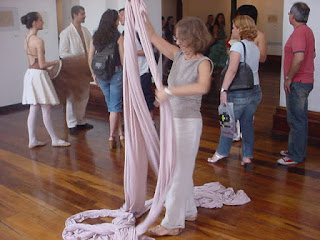
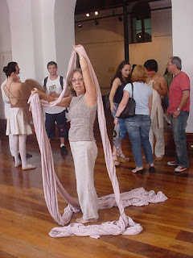
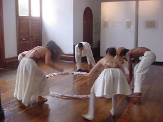
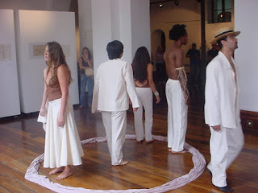
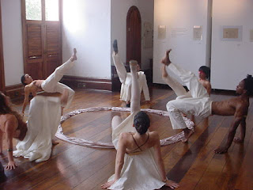
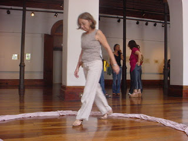

Cuidando da mente
Em artes, "mental" refere-se tanto ao processo mental criativo subjacente à criação e interpretação artística, quanto à dimensão psicológica da arte, que envolve a expressão de emoções, autoconhecimento, catarse e o impacto na saúde mental. A arte é vista como um processo mental que organiza elementos para evocar sentidos e emoções, e a interpretação de uma obra é um ato subjetivo que reflete o estado mental e as experiências do observador. Quando se fala em "mental" em artes, está-se a abordar a mente do artista e do apreciador, focando-se no processo de criar e de sentir, e como a arte se manifesta e se relaciona com o nosso mundo interior e a nossa saúde psicológica.
Teatro no Palácio Cruz e Souza / 2016
     